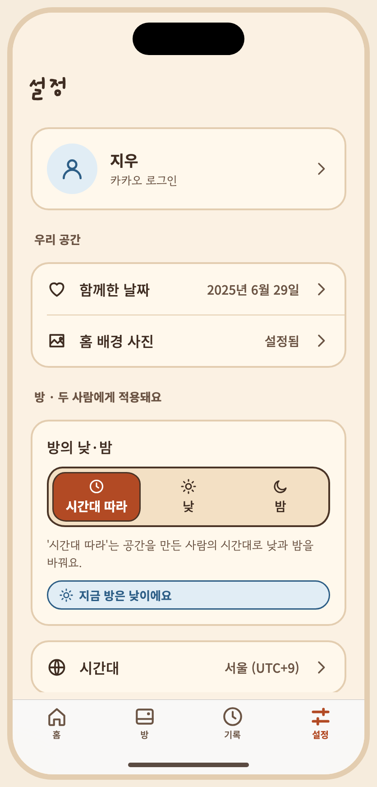
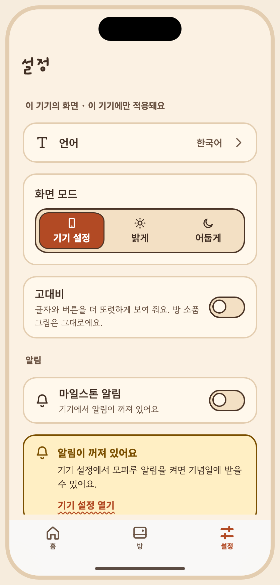
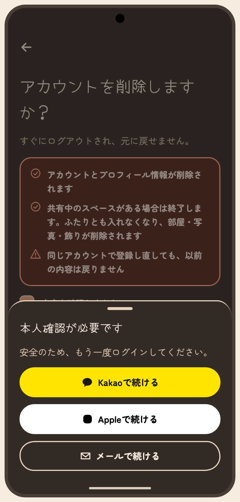
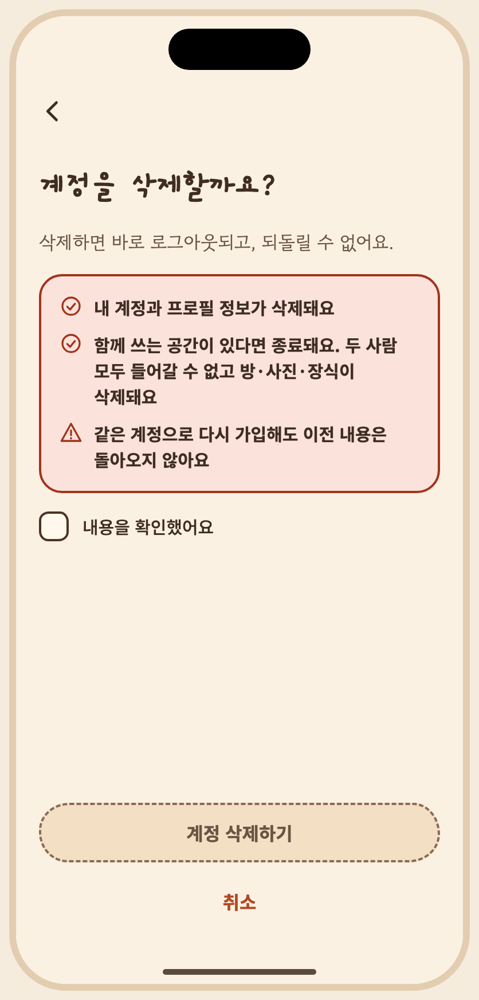

아티팩트 정본의 저장소 미러 · 버전 1794387715-f47d · 생성 파일은 수정하지 마세요. 상태 명세와 PNG는 아티팩트에 비해 오래되었을 수 있습니다. 아티팩트




# S13 설정 탭 승인자: 미승인 승인일: 미정 ## 목적, ID, 경로 ID: S13 Route: /(tabs)/settings, /settings/delete-account ## 디자인 원본 - [S13-settings.dc.html](../../../canvas/project/S13-settings.dc.html) ## 이미지 - [S13-top__ios-day-light-ko.png](../../../exports/S13-top__ios-day-light-ko.png) - [S13-notif-denied__ios-day-light-ko.png](../../../exports/S13-notif-denied__ios-day-light-ko.png) - [S13-delete-reauth__android-dark-ja.png](../../../exports/S13-delete-reauth__android-dark-ja.png) - [S13-delete-explain__ios-light-ko.png](../../../exports/S13-delete-explain__ios-light-ko.png) ## 상태와 상호작용 - **캔버스 보드**: `S13-settings, S26-tab-settings` - **목적**: 프로필/로그아웃/**계정 삭제(US10)**, 앱 언어(기기 언어 기본), 방 낮·밤 모드와 시간대(두 사람에게 적용), 앱 화면 모드·고대비(이 기기에만), 함께한 날짜, AI 동의, 앱 정보, 약관, 문의·신고, 공간 종료 진입. - **이동**: 탭 루트(설정). 언어·시간대 → 시트. AI 동의 관리·라이선스·공간 종료·문의·신고 → 푸시(탭 바 숨김). - 구역 제목으로 **어디에 적용되는지** 구분해요: "방 · 두 사람에게 적용돼요" / "이 기기의 화면 · 이 기기에만 적용돼요". - "공간 종료"는 고정 컨트롤이 아니라 설정 안 위험 구역 한 줄(확인 단계 필수). 이는 스펙 FR-027 문구와 달라요(handoff.md). - 방 낮·밤·시간대는 공유 설정이라 오프라인에서는 잠겨요. 이 기기의 화면 설정은 오프라인에서도 바꿀 수 있어요. - **긴 문구·언어 사례**: 구역 제목이 영어·일본어에서 길어져 두 줄이 돼요. | 상태 ID | 설명 | 사용하는 키 | 그린 조합 | |---|---|---|---| | `S13-loading` | 로딩 | `set.title` `set.loading` `a11y.tabbar` `tab.home` `a11y.tab` `tab.room` `tab.settings` `a11y.tab.sel` | iOS·밝게·ko, Android·어둡게·ko | | `S13-top` | 계정 · 공간 · 방 (낮·밤 모드는 두 사람에게 적용) | `set.title` `set.name.value` `set.login.kakao` `set.together` `set.together.value` `set.cover` `set.cover.on` `set.room.mode` `set.room.mode.auto` `set.room.mode.day` `set.room.mode.night` `set.room.mode.help` `set.room.now` `set.room.tz` `set.room.tz.value` `set.lang` `set.theme` `set.theme.system` `set.theme.light` `set.theme.dark` `set.hc` `set.hc.help` `a11y.off` `a11y.switch` `set.notif` `set.notif.sub.off` `set.notif.help` `set.ai.consent` `consent.status.on` `set.sec.info` `set.about.version` `set.about.licenses` `set.terms` `set.privacy` `set.support` `set.logout` `set.end` `set.end.help` `set.account.delete` `set.account.delete.sub` `set.sec.couple` `set.sec.room` `a11y.tabbar` `tab.home` `a11y.tab` `tab.room` `tab.settings` `a11y.tab.sel` | iOS·낮·밝게·ko, Android·밤·어둡게·ko, iOS·낮·밝게·en, Android·밤·어둡게·ja 외 2 | | `S13-bottom` | 이 기기 화면 · 언어 · 모드 · 고대비 · 앱 정보 · 공간 종료 | `set.title` `set.name.value` `set.login.kakao` `set.together` `set.together.value` `set.cover` `set.cover.on` `set.room.mode` `set.room.mode.auto` `set.room.mode.day` `set.room.mode.night` `set.room.mode.help` `set.room.now` `set.room.tz` `set.room.tz.value` `set.lang` `set.theme` `set.theme.system` `set.theme.light` `set.theme.dark` `set.hc` `set.hc.help` `a11y.off` `a11y.switch` `set.notif` `set.notif.sub.off` `set.notif.help` `set.ai.consent` `consent.status.on` `set.sec.info` `set.about.version` `set.about.licenses` `set.terms` `set.privacy` `set.support` `set.logout` `set.end` `set.end.help` `set.account.delete` `set.account.delete.sub` `set.sec.app` `set.sec.notif` `set.sec.ai` `set.sec.danger` `a11y.tabbar` `tab.home` `a11y.tab` `tab.room` `tab.settings` `a11y.tab.sel` | iOS·낮·밝게·ko, Android·밤·어둡게·ko, iOS·낮·밝게·en, Android·밤·어둡게·ja 외 3 | | `S13-cover-sheet` | 홈 배경 사진 행 → 바꾸기 시트 | `set.title` `set.name.value` `set.login.kakao` `set.together` `set.together.value` `set.cover` `set.cover.on` `set.room.mode` `set.room.mode.auto` `set.room.mode.day` `set.room.mode.night` `set.room.mode.help` `set.room.now` `set.room.tz` `set.room.tz.value` `set.lang` `set.theme` `set.theme.system` `set.theme.light` `set.theme.dark` `set.hc` `set.hc.help` `a11y.off` `a11y.switch` `set.notif` `set.notif.sub.off` `set.notif.help` `set.ai.consent` `consent.status.on` `set.sec.info` `set.about.version` `set.about.licenses` `set.terms` `set.privacy` `set.support` `set.logout` `set.end` `set.end.help` `set.account.delete` `set.account.delete.sub` `set.sec.couple` `set.sec.room` `a11y.tabbar` `tab.home` `a11y.tab` `tab.room` `tab.settings` `a11y.tab.sel` `cover.sheet.title` `sample.partner` `cover.by.time` `cover.by` `cover.sheet.pick` `cover.sheet.remove` `cover.sheet.note` `common.cancel` | iOS·낮·밝게·ko, Android·밤·어둡게·ko | | `S13-room-night` | 방 모드 = 밤 선택 | `set.title` `set.name.value` `set.login.kakao` `set.together` `set.together.value` `set.cover` `set.cover.on` `set.room.mode` `set.room.mode.auto` `set.room.mode.day` `set.room.mode.night` `set.room.mode.help` `set.room.now` `set.room.tz` `set.room.tz.value` `set.lang` `set.theme` `set.theme.system` `set.theme.light` `set.theme.dark` `set.hc` `set.hc.help` `a11y.off` `a11y.switch` `set.notif` `set.notif.sub.off` `set.notif.help` `set.ai.consent` `consent.status.on` `set.sec.info` `set.about.version` `set.about.licenses` `set.terms` `set.privacy` `set.support` `set.logout` `set.end` `set.end.help` `set.account.delete` `set.account.delete.sub` `set.sec.couple` `set.sec.room` `a11y.tabbar` `tab.home` `a11y.tab` `tab.room` `tab.settings` `a11y.tab.sel` | iOS·낮·밝게·ko, Android·밤·어둡게·ko | | `S13-notif-off` | 알림 행 · 꺼짐(처음 상태, 이 기기에만 적용) | `set.title` `set.name.value` `set.login.kakao` `set.together` `set.together.value` `set.cover` `set.cover.on` `set.room.mode` `set.room.mode.auto` `set.room.mode.day` `set.room.mode.night` `set.room.mode.help` `set.room.now` `set.room.tz` `set.room.tz.value` `set.lang` `set.theme` `set.theme.system` `set.theme.light` `set.theme.dark` `set.hc` `set.hc.help` `a11y.off` `a11y.switch` `set.notif` `set.notif.sub.off` `set.notif.help` `set.ai.consent` `consent.status.on` `set.sec.info` `set.about.version` `set.about.licenses` `set.terms` `set.privacy` `set.support` `set.logout` `set.end` `set.end.help` `set.account.delete` `set.account.delete.sub` `set.sec.app` `set.sec.notif` `set.sec.ai` `set.sec.danger` `a11y.tabbar` `tab.home` `a11y.tab` `tab.room` `tab.settings` `a11y.tab.sel` | iOS·낮·밝게·ko, Android·밤·어둡게·ko | | `S13-notif-on` | 알림 행 · 켜짐(오전 9시) | `set.title` `set.name.value` `set.login.kakao` `set.together` `set.together.value` `set.cover` `set.cover.on` `set.room.mode` `set.room.mode.auto` `set.room.mode.day` `set.room.mode.night` `set.room.mode.help` `set.room.now` `set.room.tz` `set.room.tz.value` `set.lang` `set.theme` `set.theme.system` `set.theme.light` `set.theme.dark` `set.hc` `set.hc.help` `a11y.off` `a11y.switch` `set.notif` `set.notif.sub.on` `set.notif.help` `set.ai.consent` `consent.status.on` `set.sec.info` `set.about.version` `set.about.licenses` `set.terms` `set.privacy` `set.support` `set.logout` `set.end` `set.end.help` `set.account.delete` `set.account.delete.sub` `set.sec.app` `set.sec.notif` `set.sec.ai` `set.sec.danger` `a11y.tabbar` `tab.home` `a11y.tab` `tab.room` `tab.settings` `a11y.tab.sel` | iOS·낮·밝게·ko, Android·밤·어둡게·ko | | `S13-notif-denied` | 알림 행 · 기기에서 꺼져 있음(켜는 방법 안내) | `set.title` `set.name.value` `set.login.kakao` `set.together` `set.together.value` `set.cover` `set.cover.on` `set.room.mode` `set.room.mode.auto` `set.room.mode.day` `set.room.mode.night` `set.room.mode.help` `set.room.now` `set.room.tz` `set.room.tz.value` `set.lang` `set.theme` `set.theme.system` `set.theme.light` `set.theme.dark` `set.hc` `set.hc.help` `a11y.off` `a11y.switch` `set.notif` `set.notif.sub.denied` `set.notif.denied.title` `set.notif.denied.body` `set.notif.denied.action` `set.notif.help` `set.ai.consent` `consent.status.on` `set.sec.info` `set.about.version` `set.about.licenses` `set.terms` `set.privacy` `set.support` `set.logout` `set.end` `set.end.help` `set.account.delete` `set.account.delete.sub` `set.sec.app` `set.sec.notif` `set.sec.ai` `set.sec.danger` `a11y.tabbar` `tab.home` `a11y.tab` `tab.room` `tab.settings` `a11y.tab.sel` | iOS·낮·밝게·ko, Android·밤·어둡게·ko, iOS·낮·밝게·en, Android·밤·어둡게·ja | | `S13-hc-on` | 고대비 켬 (글자·컨트롤만 강화) | `set.title` `set.name.value` `set.login.kakao` `set.together` `set.together.value` `set.cover` `set.cover.on` `set.room.mode` `set.room.mode.auto` `set.room.mode.day` `set.room.mode.night` `set.room.mode.help` `set.room.now` `set.room.tz` `set.room.tz.value` `set.lang` `set.theme` `set.theme.system` `set.theme.light` `set.theme.dark` `set.hc` `set.hc.help` `a11y.on` `a11y.switch` `set.notif` `set.notif.sub.off` `set.notif.help` `set.ai.consent` `consent.status.on` `set.sec.info` `set.about.version` `set.about.licenses` `set.terms` `set.privacy` `set.support` `set.logout` `set.end` `set.end.help` `set.account.delete` `set.account.delete.sub` `set.sec.app` `set.sec.notif` `set.sec.ai` `set.sec.danger` `a11y.tabbar` `tab.home` `a11y.tab` `tab.room` `tab.settings` `a11y.tab.sel` | iOS·낮·밝게·ko·고대비, Android·밤·어둡게·ko·고대비 | | `S13-lang` | 언어 선택 시트 | `set.title` `set.name.value` `set.login.kakao` `set.together` `set.together.value` `set.cover` `set.cover.on` `set.room.mode` `set.room.mode.auto` `set.room.mode.day` `set.room.mode.night` `set.room.mode.help` `set.room.now` `set.room.tz` `set.room.tz.value` `set.lang` `set.theme` `set.theme.system` `set.theme.light` `set.theme.dark` `set.hc` `set.hc.help` `a11y.off` `a11y.switch` `set.notif` `set.notif.sub.off` `set.notif.help` `set.ai.consent` `consent.status.on` `set.sec.info` `set.about.version` `set.about.licenses` `set.terms` `set.privacy` `set.support` `set.logout` `set.end` `set.end.help` `set.account.delete` `set.account.delete.sub` `set.sec.app` `set.sec.notif` `set.sec.ai` `set.sec.danger` `a11y.tabbar` `tab.home` `a11y.tab` `tab.room` `tab.settings` `a11y.tab.sel` `set.lang.sheet` `set.lang.system` `set.lang.note` | iOS·밝게·ko, Android·어둡게·ko, iOS·밝게·en, Android·어둡게·ja | | `S13-tz` | 시간대 선택 시트 | `set.title` `set.name.value` `set.login.kakao` `set.together` `set.together.value` `set.cover` `set.cover.on` `set.room.mode` `set.room.mode.auto` `set.room.mode.day` `set.room.mode.night` `set.room.mode.help` `set.room.now` `set.room.tz` `set.room.tz.value` `set.lang` `set.theme` `set.theme.system` `set.theme.light` `set.theme.dark` `set.hc` `set.hc.help` `a11y.off` `a11y.switch` `set.notif` `set.notif.sub.off` `set.notif.help` `set.ai.consent` `consent.status.on` `set.sec.info` `set.about.version` `set.about.licenses` `set.terms` `set.privacy` `set.support` `set.logout` `set.end` `set.end.help` `set.account.delete` `set.account.delete.sub` `set.sec.couple` `set.sec.room` `a11y.tabbar` `tab.home` `a11y.tab` `tab.room` `tab.settings` `a11y.tab.sel` `set.room.tz.pick` `set.room.tz.search` `set.room.tz.tokyo` `set.room.tz.la` `set.room.tz.ny` `set.room.tz.london` | iOS·낮·밝게·ko, Android·밤·어둡게·ko | | `S13-theme-dark` | 화면 모드 = 어둡게 선택 | `set.title` `set.name.value` `set.login.kakao` `set.together` `set.together.value` `set.cover` `set.cover.on` `set.room.mode` `set.room.mode.auto` `set.room.mode.day` `set.room.mode.night` `set.room.mode.help` `set.room.now` `set.room.tz` `set.room.tz.value` `set.lang` `set.theme` `set.theme.system` `set.theme.light` `set.theme.dark` `set.hc` `set.hc.help` `a11y.off` `a11y.switch` `set.notif` `set.notif.sub.off` `set.notif.help` `set.ai.consent` `consent.status.on` `set.sec.info` `set.about.version` `set.about.licenses` `set.terms` `set.privacy` `set.support` `set.logout` `set.end` `set.end.help` `set.account.delete` `set.account.delete.sub` `set.sec.app` `set.sec.notif` `set.sec.ai` `set.sec.danger` `a11y.tabbar` `tab.home` `a11y.tab` `tab.room` `tab.settings` `a11y.tab.sel` | iOS·낮·밝게·ko, Android·밤·어둡게·ko | | `S13-logout` | 로그아웃 확인 | `set.title` `set.name.value` `set.login.kakao` `set.together` `set.together.value` `set.cover` `set.cover.on` `set.room.mode` `set.room.mode.auto` `set.room.mode.day` `set.room.mode.night` `set.room.mode.help` `set.room.now` `set.room.tz` `set.room.tz.value` `set.lang` `set.theme` `set.theme.system` `set.theme.light` `set.theme.dark` `set.hc` `set.hc.help` `a11y.off` `a11y.switch` `set.notif` `set.notif.sub.off` `set.notif.help` `set.ai.consent` `consent.status.on` `set.sec.info` `set.about.version` `set.about.licenses` `set.terms` `set.privacy` `set.support` `set.logout` `set.end` `set.end.help` `set.account.delete` `set.account.delete.sub` `set.sec.app` `set.sec.notif` `set.sec.ai` `set.sec.danger` `a11y.tabbar` `tab.home` `a11y.tab` `tab.room` `tab.settings` `a11y.tab.sel` `set.logout.title` `set.logout.body` `common.cancel` | iOS·밝게·ko, Android·어둡게·ko | | `S13-error` | 불러오기 오류 | `set.title` `set.err.title` `set.err.body` `common.retry` `a11y.tabbar` `tab.home` `a11y.tab` `tab.room` `tab.settings` `a11y.tab.sel` | iOS·밝게·ko, Android·어둡게·ko | | `S13-delete-explain` | 계정 삭제 · 결과 설명(체크 전) | `acct.delete.b1` `acct.delete.b2` `acct.delete.b3` `acct.delete.title` `acct.delete.lead` `end.check` `acct.delete.confirm` `end.cancel` | iOS·밝게·ko, Android·어둡게·ko, iOS·밝게·en, Android·어둡게·ja 외 2 | | `S13-delete-checked` | 계정 삭제 · 확인 체크 후 활성 | `acct.delete.b1` `acct.delete.b2` `acct.delete.b3` `acct.delete.title` `acct.delete.lead` `end.check` `acct.delete.confirm` `end.cancel` | iOS·밝게·ko, Android·어둡게·ko | | `S13-delete-reauth` | 계정 삭제 · 본인 확인(카카오·Apple·이메일 재로그인) | `acct.delete.b1` `acct.delete.b2` `acct.delete.b3` `acct.delete.title` `acct.delete.lead` `end.check` `acct.delete.confirm` `end.cancel` `acct.delete.reauth.title` `acct.delete.reauth.body` `login.kakao` `login.apple` `login.email` | iOS·밝게·ko, Android·어둡게·ko, iOS·밝게·en, Android·어둡게·ja | | `S13-delete-reauth-fail` | 계정 삭제 · 본인 확인 실패 | `acct.delete.b1` `acct.delete.b2` `acct.delete.b3` `acct.delete.title` `acct.delete.lead` `end.check` `acct.delete.confirm` `end.cancel` `acct.delete.reauth.title` `acct.delete.reauth.body` `acct.delete.reauth.fail` `login.kakao` `login.apple` `login.email` | iOS·밝게·ko, Android·어둡게·ko | | `S13-delete-progress` | 계정 삭제 · 삭제하는 중 | `acct.delete.progress` | iOS·밝게·ko, Android·어둡게·ko | | `S13-delete-offline` | 계정 삭제 · 오프라인(대기열 없음, 온라인에서만) | `acct.delete.b1` `acct.delete.b2` `acct.delete.b3` `acct.delete.title` `acct.delete.lead` `end.check` `acct.delete.offline` `acct.delete.confirm` `end.cancel` | iOS·밝게·ko, Android·어둡게·ko | | `S13-delete-fail` | 계정 삭제 · 요청 실패(아직 아무것도 지워지지 않음) | `acct.delete.b1` `acct.delete.b2` `acct.delete.b3` `acct.delete.title` `acct.delete.lead` `end.check` `acct.delete.fail.title` `acct.delete.fail.body` `common.retry` `acct.delete.confirm` `end.cancel` | iOS·밝게·ko, Android·어둡게·ko | | `S13-delete-done` | 계정 삭제 · 완료 후 로그아웃 화면 | `main.appName` `brand.tagline` `login.title` `login.kakao` `login.apple` `login.email` `onb.legal.lead` `onb.legal.links` `onb.age` `acct.delete.done` | iOS·밝게·ko, Android·어둡게·ko | ## 이동 및 뒤로 F04: S13 → S14 종료 또는 S15 신고; 동의 관리 → S12. 뒤로: 상세에서 설정으로; 종료 완료 후 S14 종료 안내. S27은 세 탭의 전역 내비게이션 참조. ## 접근성 상태 표에 나열된 `a11y.*` 키를 스크린 리더 이름으로 사용합니다. 공통 접근성 및 200% 글자 규칙은 [interaction notes](../../../interaction-notes.md#10-접근성-상호작용)를 참조하세요. TODO: 해당 상태에 명시되지 않은 역할과 이름을 확인하세요. ## 수락 시나리오 - [ ] S13-AC-01: 설정에서 공간 종료와 신고 화면으로 이동할 수 있다. - [ ] S13-AC-02: 알림 권한이 거부된 경우 기기 설정 열기를 안내한다. ## 열린 질문 / 추적 TODO: 명세에 없는 disabled/offline 상태의 적용 여부와 정확한 뒤로 대상을 확인하세요. 시나리오와 요구사항·테스트·실행 결과는 [추적표](../../traceability.md)에 연결하세요.
| Key | 한국어 | English · draft G4 | 日本語 · draft G4 |
|---|---|---|---|
| a11y.off | 꺼짐 | off | オフ |
| a11y.on | 켜짐 | on | オン |
| a11y.switch | {name}, {state} | {name}, {state} | {name}、{state} |
| a11y.tab | {name} 탭, {total}개 중 {n}번째{sel} | {name} tab, {n} of {total}{sel} | {name}タブ、{total}件中{n}件目{sel} |
| a11y.tab.sel | , 선택됨 | , selected | 、選択中 |
| a11y.tabbar | 탭 막대 | Tab bar | タブバー |
| acct.delete.b1 | 내 계정과 프로필 정보가 삭제돼요 | Your account and profile information are deleted | アカウントとプロフィール情報が削除されます |
| acct.delete.b2 | 함께 쓰는 공간이 있다면 종료돼요. 두 사람 모두 들어갈 수 없고 방·사진·장식이 삭제돼요 | If you share a space, it ends. Neither of you can open it, and the room, photos and decorations are deleted | 共有中のスペースがある場合は終了します。ふたりとも入れなくなり、部屋・写真・飾りが削除されます |
| acct.delete.b3 | 같은 계정으로 다시 가입해도 이전 내용은 돌아오지 않아요 | Signing up again with the same login won't bring anything back | 同じアカウントで登録し直しても、以前の内容は戻りません |
| acct.delete.confirm | 계정 삭제하기 | Delete account | アカウントを削除する |
| acct.delete.done | 계정을 삭제했어요 | Your account was deleted | アカウントを削除しました |
| acct.delete.fail.body | 아직 아무것도 지워지지 않았어요. 잠시 뒤 다시 시도해 주세요. | Nothing was deleted yet. Please try again in a moment. | まだ何も削除されていません。しばらくしてからもう一度お試しください。 |
| acct.delete.fail.title | 삭제하지 못했어요 | Couldn't delete it | 削除できませんでした |
| acct.delete.lead | 삭제하면 바로 로그아웃되고, 되돌릴 수 없어요. | You'll be signed out right away, and this can't be undone. | すぐにログアウトされ、元に戻せません。 |
| acct.delete.offline | 인터넷에 연결되어야 계정을 삭제할 수 있어요 | You need an internet connection to delete your account | アカウントの削除にはインターネット接続が必要です |
| acct.delete.progress | 계정을 삭제하는 중이에요 | Deleting your account | アカウントを削除しています |
| acct.delete.reauth.account (proposal · 미승인) | {provider} 계정 · {email} | {provider} account · {email} | {provider}アカウント・{email} |
| acct.delete.reauth.apple (proposal · 미승인) | Apple로 가입한 계정은 삭제할 때 Apple 연결도 함께 해제돼요. | For accounts created with Apple, the Apple connection is also removed when you delete. | Appleで作成したアカウントは、削除するとAppleとの連携も解除されます。 |
| acct.delete.reauth.body | 계정을 지키기 위해 앱 비밀번호를 입력해 주세요. | To protect your account, enter your app password. | アカウントを守るため、アプリのパスワードを入力してください。 |
| acct.delete.reauth.fail | 본인 확인에 실패했어요. 다시 시도해 주세요. | We couldn't confirm it's you. Please try again. | 本人確認に失敗しました。もう一度お試しください。 |
| acct.delete.reauth.forgot.body (proposal · 미승인) | 재설정 메일을 받거나, 처음 로그인한 방법으로 다시 로그인해서 확인할 수 있어요. | Get a reset email, or confirm by signing in again the way you first did. | 再設定メールを受け取るか、最初にログインした方法でもう一度ログインして確認できます。 |
| acct.delete.reauth.forgot.oauth (proposal · 미승인) | {provider}로 다시 로그인해 확인 | Confirm by signing in with {provider} | {provider}で再ログインして確認 |
| acct.delete.reauth.forgot.title (proposal · 미승인) | 비밀번호가 기억나지 않으세요? | Can't remember your password? | パスワードを思い出せませんか？ |
| acct.delete.reauth.rate (proposal · 미승인) | 비밀번호를 여러 번 틀렸어요. 10분 뒤에 다시 하거나, 처음 로그인한 방법으로 확인해 주세요. | Too many wrong attempts. Try again in 10 minutes, or confirm with the way you first signed in. | パスワードを何度も間違えました。10分後にもう一度試すか、最初にログインした方法で確認してください。 |
| acct.delete.reauth.submit (proposal · 미승인) | 확인하고 삭제하기 | Confirm and delete | 確認して削除する |
| acct.delete.reauth.title | 본인 확인이 필요해요 | Please confirm it's you | 本人確認が必要です |
| acct.delete.reauth.wrong (proposal · 미승인) | 비밀번호가 맞지 않아요. 다시 입력해 주세요. | That password isn't right. Please try again. | パスワードが正しくありません。もう一度入力してください。 |
| acct.delete.title | 계정을 삭제할까요? | Delete your account? | アカウントを削除しますか？ |
| brand.tagline | Our little world, together. | Our little world, together. | Our little world, together. |
| common.cancel | 취소 | Cancel | キャンセル |
| common.retry | 다시 시도 | Try again | もう一度試す |
| consent.status.on | 동의함 · {date} | Agreed · {date} | 同意済み · {date} |
| cover.by | 마지막 변경: {name} · {time} | Last changed: {name} · {time} | 最終変更: {name} · {time} |
| cover.by.time | 오늘 오후 9:14 | Today, 9:14 PM | 今日 21:14 |
| cover.sheet.note | 두 사람이 같은 사진을 봐요. 어느 쪽이든 바꾸거나 없앨 수 있고, 마지막에 바꾼 사진이 보여요. | You both see the same photo. Either of you can change or remove it, and the last change is the one shown. | ふたりに同じ写真が表示されます。どちらでも変更・削除でき、最後に変更した写真が表示されます。 |
| cover.sheet.pick | 앨범에서 고르기 | Choose from your photos | アルバムから選ぶ |
| cover.sheet.remove | 사진 없애기 | Remove photo | 写真を外す |
| cover.sheet.title | 홈 배경 사진 | Home background photo | ホームの背景写真 |
| end.cancel | 취소 | Cancel | キャンセル |
| end.check | 내용을 확인했어요 | I understand | 内容を確認しました |
| login.apple | Apple로 계속하기 | Continue with Apple | Appleで続ける |
| login.email | 이메일로 계속하기 | Continue with email | メールで続ける |
| login.kakao | 카카오로 계속하기 | Continue with Kakao | Kakaoで続ける |
| login.title | 로그인 방법을 골라 주세요 | Choose how to sign in | ログイン方法を選んでください |
| main.appName | 아룸 | Aroom | アルーム |
| onb.age | 만 14세 이상만 사용할 수 있어요. | You must be 14 or older to use Aroom. | ご利用は14歳以上の方に限ります。 |
| onb.legal.lead | 계속하면 만 14세 이상이며 아래 내용에 동의하는 것으로 봐요. | By continuing, you confirm you are 14 or older and agree to the following. | 続けると、14歳以上であり、以下に同意したものとみなされます。 |
| onb.legal.links | 이용약관 · 개인정보 처리방침 | Terms of Use · Privacy Policy | 利用規約 · プライバシーポリシー |
| sample.partner | 하루 | Haru | ハル |
| set.about.licenses | 글꼴·오픈소스 라이선스 | Font and open-source licenses | フォント・オープンソースのライセンス |
| set.about.version | 버전 {v} | Version {v} | バージョン{v} |
| set.account.delete | 계정 삭제 | Delete account | アカウントを削除 |
| set.account.delete.sub | 되돌릴 수 없어요 | This can't be undone | 元に戻せません |
| set.ai.consent | AI 처리 동의 | AI processing consent | AI処理への同意 |
| set.cover | 홈 배경 사진 | Home background photo | ホームの背景写真 |
| set.cover.off | 없음 | None | なし |
| set.cover.on | 설정됨 | Set | 設定済み |
| set.end | 공간 종료 | End space | スペースを終了 |
| set.end.help | 종료하면 함께 쓰던 데이터가 삭제돼요. 되돌릴 수 없어요. | Ending deletes the data you shared. This can't be undone. | 終了すると、いっしょに使っていたデータが削除されます。元に戻せません。 |
| set.err.body | 인터넷 연결을 확인하고 다시 시도해 주세요. | Check your internet connection and try again. | インターネット接続を確認して、もう一度お試しください。 |
| set.err.title | 설정을 불러오지 못했어요 | Couldn't load settings | 設定を読み込めませんでした |
| set.hc | 고대비 | High contrast | ハイコントラスト |
| set.hc.help | 글자와 버튼을 더 또렷하게 보여 줘요. 방 소품 그림은 그대로예요. | Makes text and controls stronger. Room item artwork stays the same. | 文字とボタンをよりはっきり表示します。部屋の小物の絵は変わりません。 |
| set.lang | 언어 | Language | 言語 |
| set.lang.note | 방에 쓴 문구와 프롬프트는 번역되지 않고 쓴 그대로 보여요. | Text you write in the room and prompts are not translated; they appear as written. | 部屋に書いた文言とプロンプトは翻訳されず、書いたとおりに表示されます。 |
| set.lang.sheet | 앱 언어 | App language | アプリの言語 |
| set.lang.system | 기기 설정 따르기 | Follow device | 端末の設定に従う |
| set.loading | 설정을 불러오는 중이에요 | Loading settings | 設定を読み込んでいます |
| set.login.kakao | 카카오 로그인 | Signed in with Kakao | Kakaoでログイン中 |
| set.logout | 로그아웃 | Sign out | ログアウト |
| set.logout.body | 로그아웃해도 공간과 방은 그대로예요. | Signing out doesn't change your space or room. | ログアウトしても、スペースと部屋はそのままです。 |
| set.logout.title | 로그아웃할까요? | Sign out? | ログアウトしますか？ |
| set.name | 별명 | Nickname | ニックネーム |
| set.name.value | 지우 | Jiu | ジウ |
| set.notif | 마일스톤 알림 | Milestone notifications | 記念日の通知 |
| set.notif.denied.action | 기기 설정 열기 | Open device settings | 端末の設定を開く |
| set.notif.denied.body | 기기 설정에서 아룸 알림을 켜면 기념일에 받을 수 있어요. | Turn on Aroom notifications in your device settings to receive them on milestone days. | 端末の設定でアルームの通知をオンにすると、記念日に受け取れます。 |
| set.notif.denied.title | 알림이 꺼져 있어요 | Notifications are turned off | 通知がオフです |
| set.notif.help | 다가오는 기념일을 이 기기에 예약해 두고 오전 9시에 알려 줘요. 상대 기기는 따로 정해요. | Upcoming milestones are scheduled on this device and delivered at 9:00 am. Your partner's device is set separately. | 近づく記念日をこの端末に予約し、午前9時にお知らせします。パートナーの端末は別に設定します。 |
| set.notif.sub.denied | 기기에서 알림이 꺼져 있어요 | Notifications are off on this device | 端末で通知がオフです |
| set.notif.sub.off | 꺼짐 · 이 기기에만 적용돼요 | Off · applies to this device only | オフ · この端末のみ |
| set.notif.sub.on | 켜짐 · 기념일 오전 9시 | On · 9:00 am on milestone days | オン · 記念日の午前9時 |
| set.privacy | 개인정보 처리방침 | Privacy Policy | プライバシーポリシー |
| set.pw.current (proposal · 미승인) | 지금 비밀번호 | Current password | 現在のパスワード |
| set.pw.new (proposal · 미승인) | 새 비밀번호 | New password | 新しいパスワード |
| set.pw.save (proposal · 미승인) | 저장하기 | Save | 保存する |
| set.pw.saved (proposal · 미승인) | 비밀번호를 바꿨어요 | Password changed | パスワードを変更しました |
| set.room.mode | 방의 낮·밤 | Room day / night | 部屋の昼と夜 |
| set.room.mode.auto | 시간대 따라 | By time zone | 時間帯に合わせる |
| set.room.mode.day | 낮 | Day | 昼 |
| set.room.mode.help | '시간대 따라'는 두 사람의 공간 시간대에 맞춰 오전 6시부터 오후 6시까지 낮으로 보여 줘요. | "By time zone" follows your shared space time zone. Day runs from 6 AM to 6 PM. | 「時間帯に合わせる」は、二人のスペースのタイムゾーンに従います。午前6時から午後6時までは昼として表示します。 |
| set.room.mode.night | 밤 | Night | 夜 |
| set.room.now | 지금 방은 {mode}이에요 | The room is showing {mode} now | 今、部屋は{mode}です |
| set.room.tz | 시간대 | Time zone | タイムゾーン |
| set.room.tz.la | 로스앤젤레스 (UTC-8) | Los Angeles (UTC-8) | ロサンゼルス（UTC-8） |
| set.room.tz.london | 런던 (UTC+0) | London (UTC+0) | ロンドン（UTC+0） |
| set.room.tz.ny | 뉴욕 (UTC-5) | New York (UTC-5) | ニューヨーク（UTC-5） |
| set.room.tz.pick | 시간대 고르기 | Choose a time zone | タイムゾーンを選ぶ |
| set.room.tz.search | 도시 검색 | Search cities | 都市を検索 |
| set.room.tz.tokyo | 도쿄 (UTC+9) | Tokyo (UTC+9) | 東京（UTC+9） |
| set.room.tz.value | 서울 (UTC+9) | Seoul (UTC+9) | ソウル（UTC+9） |
| set.sec.account | 계정 | Account | アカウント |
| set.sec.ai | AI 처리 | AI processing | AI処理 |
| set.sec.app | 이 기기의 화면 · 이 기기에만 적용돼요 | This device's display · applies to this device only | この端末の表示 · この端末のみに適用されます |
| set.sec.couple | 우리 공간 | Our space | ふたりのスペース |
| set.sec.danger | 공간 | Space | スペース |
| set.sec.info | 앱 정보 | About | アプリ情報 |
| set.sec.notif | 알림 | Notifications | 通知 |
| set.sec.room | 방 · 두 사람에게 적용돼요 | Room · applies to both of you | 部屋 · ふたりに適用されます |
| set.security.method (proposal · 미승인) | 로그인 방법 | Sign-in method | ログイン方法 |
| set.security.pwChange (proposal · 미승인) | 앱 비밀번호 바꾸기 | Change app password | アプリのパスワードを変更 |
| set.security.pwForgot (proposal · 미승인) | 앱 비밀번호를 잊었어요 | I forgot my app password | アプリのパスワードを忘れました |
| set.security.pwNote (proposal · 미승인) | 앱 비밀번호는 계정 삭제처럼 중요한 일을 할 때만 물어봐요. | We only ask for your app password before important actions like deleting your account. | アプリのパスワードは、アカウント削除など大切な操作の前にだけ確認します。 |
| set.security.title (proposal · 미승인) | 로그인·보안 | Sign-in & security | ログイン・セキュリティ |
| set.support | 문의 · 신고 | Contact and reports | お問い合わせ・通報 |
| set.terms | 이용약관 | Terms of Use | 利用規約 |
| set.theme | 화면 모드 | Appearance | 外観 |
| set.theme.dark | 어둡게 | Dark | ダーク |
| set.theme.light | 밝게 | Light | ライト |
| set.theme.system | 기기 설정 | Device | 端末設定 |
| set.title | 설정 | Settings | 設定 |
| set.together | 함께한 날짜 | Together since | 一緒になった日 |
| set.together.value | 2025년 6월 29일 | June 29, 2025 | 2025年6月29日 |
| tab.home | 홈 | Home | ホーム |
| tab.room | 방 | Room | 部屋 |
| tab.settings | 설정 | Settings | 設定 |